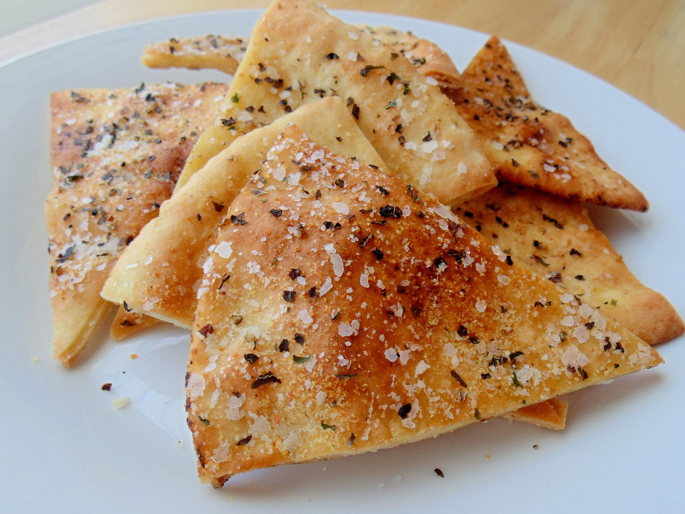

Pita Chips

Description
These baked pita chips make a lovely accompaniment to any dip or spread.
Ingredients
- 12 pita bread pockets
- ½ cup olive oil
- ½ teaspoon ground black pepper
- 1 teaspoon garlic salt
- ½ teaspoon dried basil
- 1 teaspoon dried chervil
Steps
- Preheat oven to 400 degrees F (200 degrees C).
- Cut each pita bread into 8 triangles. Place triangles on lined cookie sheet.
- In a small bowl, combine the oil, pepper, salt, basil and chervil. Brush each
triangle with oil mixture.
- Bake in the preheated oven for about 7 minutes, or until lightly browned and crispy.
Watch carefully, as they tend to burn easily!